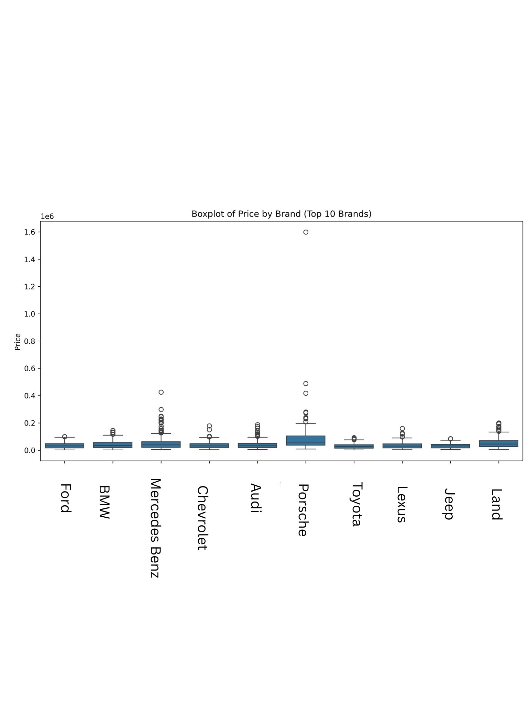
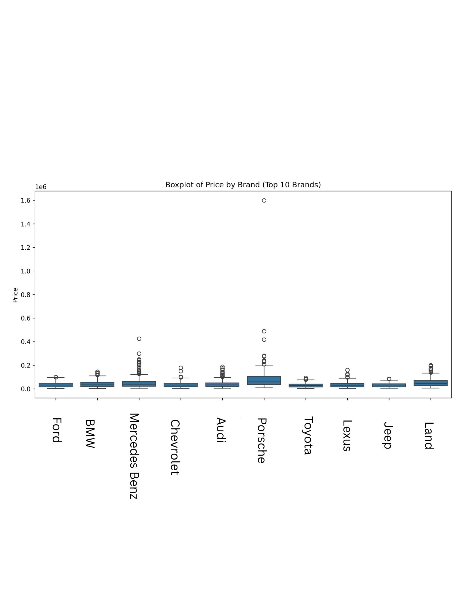

Description
This project visualizes data from a used car dataset to provide insights into pricing, mileage, fuel types, and other factors. It leverages Python libraries such as pandas, seaborn, and matplotlib to create meaningful visualizations.
Objectives Completed
- Data cleaning to handle missing and invalid values.
- Boxplot of price distribution by top car brands.
- Scatter plot showing the relationship between mileage and price.
- Bar chart highlighting average price by fuel type.
- Pie charts comparing clean titles vs salvage and accidents vs no accidents.
- Heatmap of correlations between numeric variables.
- Violin plot of price distribution by transmission type.
Reference Architecture
 
